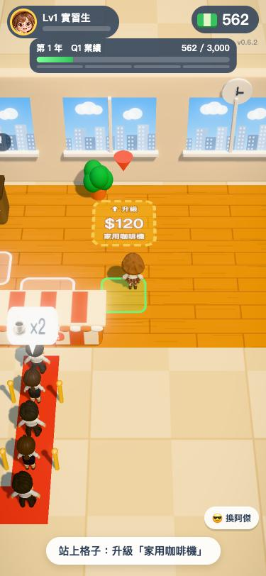
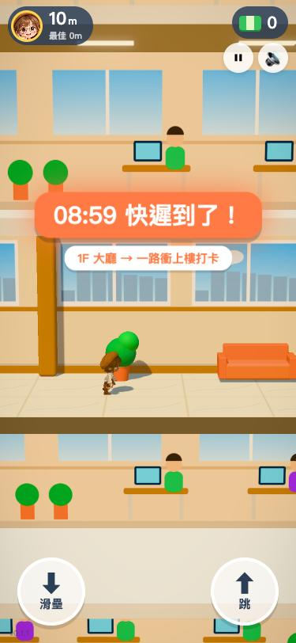

第 1 課
Claude 是什麼？不會寫程式也能做出遊戲、影片和文件
先看成果，再講原理。這一課讓你知道 Claude 能幫你做什麼、你要負責什麼。
本課步驟（5 步）
常見卡關 · 影片大綱這一課你會學到
- Claude 是什麼，跟一般聊天機器人差在哪裡
- 桌面版的 Code 分頁是什麼、為什麼它能「動手做事」
- 你負責什麼、Claude 負責什麼
1
先看成果：這些都是用中文對話做出來的
下面每一樣東西，作者都沒有自己寫一行程式，全部是在 Claude 裡用中文說「我想要…」做出來的。



2
Claude 是什麼
Claude 是 Anthropic 公司做的 AI 助理。你可以把它想成一位很會用電腦、隨叫隨到的助理：你用中文講要什麼，它會自己打開檔案、寫程式、執行工具，把東西做出來，再回頭跟你報告。
一般的聊天 AI 只會「回答問題」。Claude 桌面版的 Code 分頁多了一雙手：它可以在你指定的資料夾裡真的動手做事。
3
Code 分頁：讓 Claude 在你的資料夾裡做事
Claude 桌面版裡有好幾個分頁，這套教學用的都是 Code。差別是：
| 一般聊天 | Code 分頁 | |
|---|---|---|
| 能做什麼 | 回答問題、寫一段文字 | 開檔案、存檔、執行程式、開瀏覽器測試 |
| 成品在哪 | 在對話框裡，要自己複製 | 直接存在你的資料夾裡 |
| 適合 | 問問題、改一段文案 | 做遊戲、做影片、產出 Word／PDF |
🙋
你
用中文說要什麼
🤖
Claude
讀檔、寫程式、跑工具、自己測試
📁
你的資料夾
成品直接存在這裡
👀
你
看成果、說哪裡要改
Claude 在中間幫你跑腿，你只要說和看
4
Claude 還能幫你叫其他 AI 和網路服務
Claude 自己不會畫圖，但它可以幫你操作會畫圖的 AI，也能接上網路服務。這位作者的作品就是這樣分工的：
🎨
GPT 畫圖
角色、企劃圖、主畫面圖示（第 3 課）
🧊
Higgsfield 轉 3D
圖片變 3D 模型、加上走路動作（第 4 課）
🌐
GitHub 上線
遊戲變成一個網址，朋友手機就能玩（第 5 課）
📄
Word、PDF、影片
Claude 自己寫程式產生
5
你負責「說、看、改」，程式交給 Claude
你不需要懂程式，但要做三件事：
- 說清楚要什麼：做給誰、大概長什麼樣子、有沒有參考。
- 看成果：Claude 做完會給你看截圖或檔案。
- 說哪裡不對：「字太小」「這個角色不要回頭看鏡頭」「磁鐵有點太強」，用平常講話的方式說就好。
《上班啟示錄》從第一張企劃圖到可以上網玩，就是這樣一來一往，在一天之內做出來的，之後再一版一版加功能。
🧱 常見卡關
「我完全不會寫程式，真的可以嗎？」 可以。這整套教學的作者也不會。你要練的是「把需求講清楚」，不是寫程式。
「AI 做的東西能用嗎？會不會只是看起來像？」 Claude 做完會自己打開瀏覽器測試、截圖給你看。但最後還是要你自己玩一次、看一次，有問題直接說。
「會不會很貴？」 要付費的地方有幾個：Claude 本身、ChatGPT（畫圖）、Higgsfield（3D 點數）。第 6 課有整理。
「Claude 會不會亂動我電腦裡的東西？」 它只在你指定的資料夾裡做事，要執行比較大的動作前會先問你。第 2 課會講怎麼看那些詢問。
🎬 影片大綱：第 1 課（約 2 分鐘）
| 鏡頭 | 畫面 | 旁白重點 |
|---|---|---|
| 1 | 手機直接玩《上班啟示錄》，小葵送咖啡、升級 | 「這個遊戲，我一行程式都沒寫。」 |
| 2 | 快切：跑酷、30 秒宣傳片、餐點表 PDF、角色三視圖 | 「遊戲、影片、文件，全部是用中文講出來的。」 |
| 3 | 簡單動畫：你 → Claude → 資料夾 → 你 | Claude 是會動手做事的助理，不只是聊天 |
| 4 | 一般聊天 vs Code 分頁對照表 | Code 分頁可以在資料夾裡開檔、存檔、測試 |
| 5 | 四張卡片：GPT、Higgsfield、GitHub、Word | Claude 還能幫你叫別的 AI、接網路服務 |
| 6 | 字卡「說、看、改」 | 你負責說清楚、看成果、講哪裡不對 |
| 7 | 片尾：下一課預告「安裝與第一個作品」 | 下一課直接裝起來，做第一份文件 |